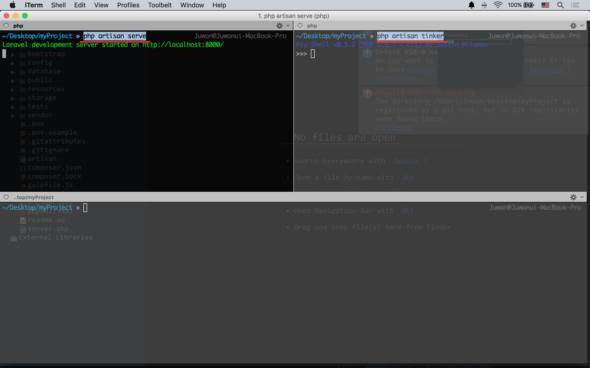

4강 - Routing 기본기
웰컴 뷰를 가지고 놀자
resources/views/welcome.blade.php 를 연다. 이 파일이 바로 2강에서 'Laravel 5'란 큰 글씨로 우리를 반겨 주었던 바로 그 뷰이다. 모든 내용을 지우고, "Hello World"를 쓴 후, 로컬서버를 부트업하고 브라우저에서 http://localhost:8000으로 접근해 보자.
<!-- resources/views/welcome.blade.php -->
Hello World$ php artisan serve
$ open http://localhost:8000 # 크롬브라우저에 주소를 직접 입력하라는 의미참고 앞으로의 실습을 위해 iTerm2의 화면을 그림과 같이 분할하고, #1창에 $ php artisan server, #2창에 $ php artisan tinker, #창은 빈 콘솔 로 띄워 놓을 것을 권장한다. 크롬브라우저에는 http://localhost:8000 을 띄워 놓자. 듀얼 모니터라면 한대에 브라우저, 한대에 코드에디터와 콘솔을 띄워 놓으면 좋다.
중요 실습 중에 .env 파일 또는 config/**.php 파일 수정으로 환경 변수가 바뀌면 반드시 로컬 서버를 재실행 해 주어야 한다.

Routing
여기에서 의문점? 분명 홈페이지(/)로 접근했고, welcome.blade.php 와 관련된 어떤 힌트도 제공하지 않았는데 어떻게 이 뷰가 로드되었을까? 요청 Url에 따라 적절한 패스로 연결시켜주는 것이 바로 Routing이 하는 역할이다.
app/Http/routes.php 를 열어보자.
Route::get('/', function () {
return view('welcome');
});'/' 요청이 오면, function 으로 싸진 Closure가 동작한다는 의미이다. Closure 안을 보면, view()라는 function에 'welcome'이란 인자를 넘겨서 반환된 값을 다시 반환한다. 'welcome'이란 인자는 resources/views/welcome.blade.php 란것을 알 수 있다. 즉, Closure에서 반환된 값이 Http 응답으로 전달된다.
view(string $view)가 아니라 스트링을 반환하면 어떻게 될까? 브라우저에 스트링이 출력된다.
Route::get('/', function () {
return 'Hello World';
});가령, 라라벨에 기본 내장 되어 있는 resources/views/errors/503.blade.php과 같이 하위 뷰를 응답하려면 어떻게 해야할까? 하위 디렉토리는 '.' 또는 '/'로 구분한다.
Route::get('/', function () {
return view('errors.503');
});참고 view()는 Helper Function 이다. return View::make('welcome')와 같이 라라벨이 제공하는 Facade('파사드' 또는 '빠사드'라 읽는다.)를 이용할 수도 있다. 필자는 view()->까지 입력했을 때 코드힌트가 나와서 Helper Function을 더 선호한다. 말 나온 김에, Facade는 Static Access 형태를 빌려 쓰고 있지만, 실제로 백그라운드에서는 Service Container에 의해서 새로운 instance를 생성하여 메소드에 접근하므로, Anti Pattern이 아니다.
참고 방금 살펴본 resources/views/errors/503.blade.php 뷰는 라라벨 어플리케이션이 유지보수 모드에 들어갔을 때 사용자에게 보여주는 뷰이다. $ php artisan down 명령으로 유지보수 상태로 전환하고, $ php artisan up 으로 서비스 상태로 복귀할 수 있다. 유지보수 모드는 웹 서버를 중지 시킨 것은 아니다.